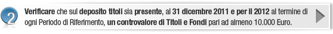
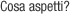
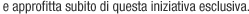

Gentile Nome Cognome, per te la manovra può ancora aspettare: da oggi e per tutto il 2012 Webank congela il costo dei bolli del deposito titoli e ti rimborsa la differenza dell'imposta dovuta secondo la nuova finanziaria. Ti offriamo un'opportunità concreta che ti permette di continuare a operare senza sentire il peso della manovra, ottimizzando la gestione del deposito titoli. Ecco come fare per aderire all'iniziativa: Hai già un deposito titoli, per questo devi solo: |
|  |
Devi compiere solo pochi passi per sfruttare tutti i vantaggi che questa opportunità ti offre. |
|  |
| (*) Per ottenere il rimborso è necessario mantenere il servizio attivo durante i periodi di riferimento di calcolo dell'imposta. |
|
Un saluto cordiale, Il team di Webank |
| Messaggio promozionale: Per i dettagli della promozione e le informazioni relative ai prodotti offerti dalla Banca, ivi compresi i fogli informativi, vai su www.webank.it. |